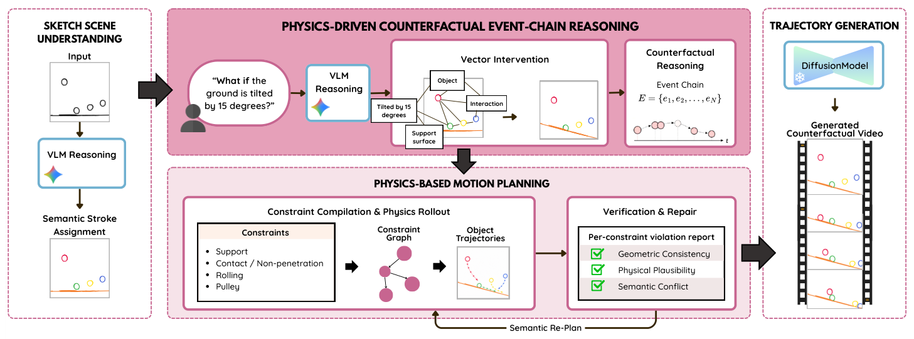
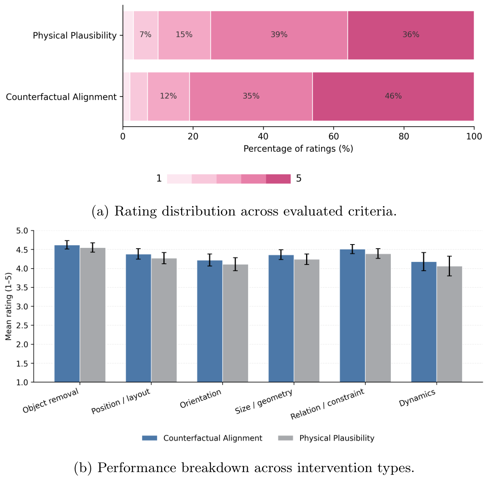
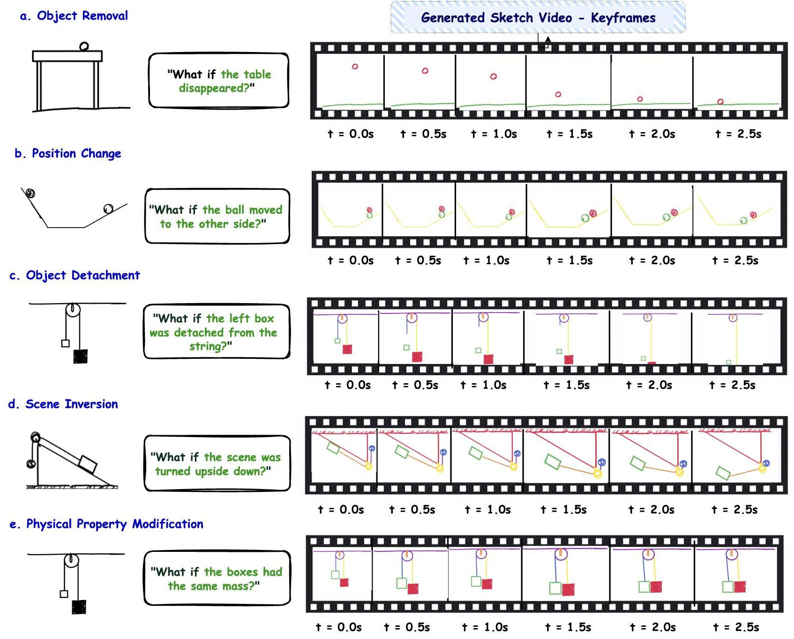
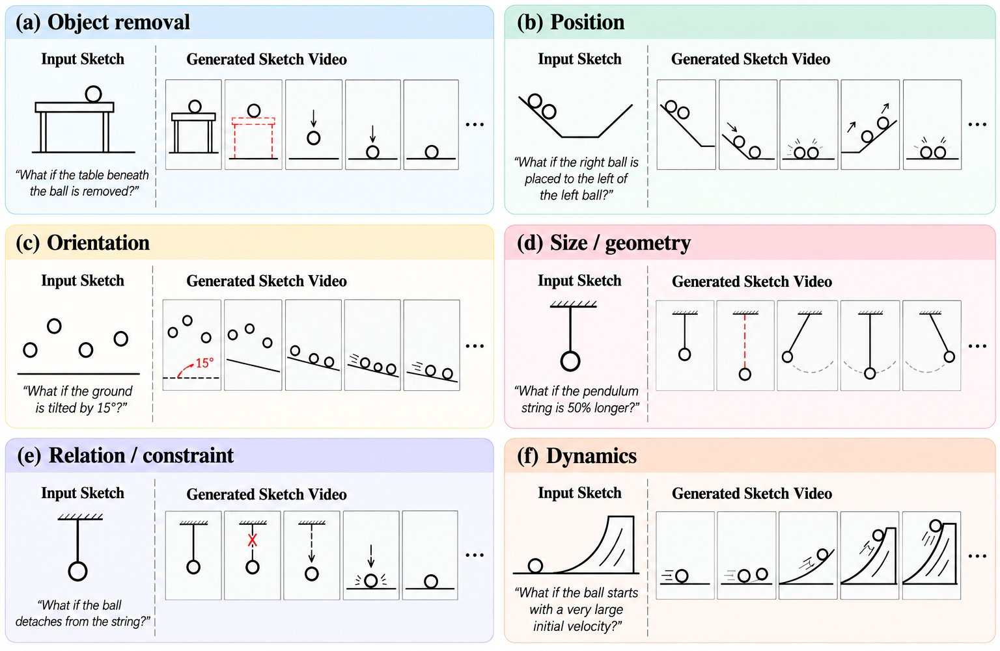

Counterfactual sketch animation asks how a scene depicted by a static sketch would evolve under a hypothetical intervention. Given a sketch and a natural-language "What if...?" question, the system must infer both the visual changes induced by the intervention and their physical consequences. We present CounterSketch, a physics-grounded framework transforming counterfactual queries into physically plausible sketch animations.
CounterSketch couples VLM-guided scene grounding, physics-driven counterfactual event-chain reasoning, constraint-based trajectory generation, and trajectory verification. Specifically, the system decomposes the intervention into a causal sequence of physical transitions to construct an updated scene graph. A constraint-driven solver computes continuous object dynamics, which undergo rigorous validation against physical, geometric, and semantic rules.
The verified trajectories are projected into object-level image-space motion bounding boxes to guide downstream sketch-video synthesis. Decoupling physical reasoning from visual rendering enables CounterSketch to produce robust, causally grounded trajectories compatible with general video synthesis models. Extensive evaluations confirm that our framework synthesizes physically consistent animations across diverse counterfactual scenarios.
CounterSketch consists of five stages, of which the first four operate on an explicit physical representation of the scene. A vision-language model first grounds the sketch into a scene graph whose objects are tied to the underlying vector strokes and whose relations include support, contact, attachment, containment and relative position.
The "What if...?" prompt is interpreted as an intervention that is applied directly to the vector strokes and the scene graph. A causal reasoning module then organizes the physical consequences into an event chain, and each event is compiled into constraints such as support, contact, non-penetration, rolling and pulley coupling, from which a constrained dynamics solver rolls out continuous object trajectories.
Each trajectory is verified for geometric, physical and semantic violations, with local repair or replanning accepted only when it reduces the detected violations. The verified trajectories are projected onto the image plane as per-frame bounding box sequences that guide the downstream video synthesis model.

In a user study with 50 participants, 81% of responses gave positive ratings on Counterfactual Alignment (46% score 5, 35% score 4) and 75% on Physical Plausibility (36% score 5, 39% score 4). Mean scores stay above 4.0 out of 5.0 across all intervention types, with Object removal rated highest (4.61±0.12 alignment, 4.54±0.13 plausibility).

Keyframe sequences for object removal, position change, object detachment, scene reorientation and geometric modification. For example, removing the table causes the ball to fall, and detaching an object from the string alters its subsequent trajectory.

CounterSketchBench contains 80 counterfactual questions across 20 base scenes. Each instance pairs a vector sketch with a "What if...?" question that specifies an intervention on the original scene.

@misc{trinhcountersketch,
author = {Trinh, Hien and To, Tan-Hiep and Vo, Dinh-Khoi and Nguyen, Tam V. and Tran, Minh-Triet and Le, Trung-Nghia},
title = {CounterSketch: Physics-Grounded Counterfactual Reasoning for Sketch-to-Video Generation},
}